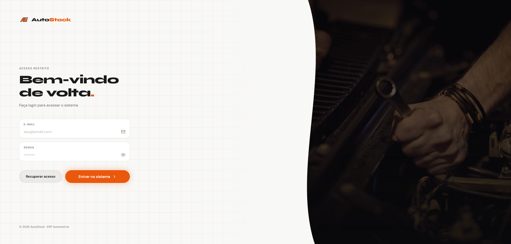
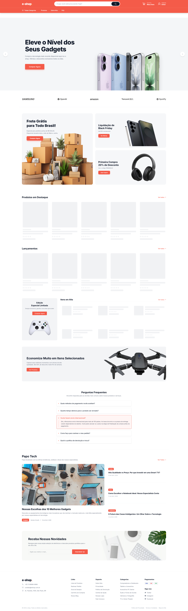
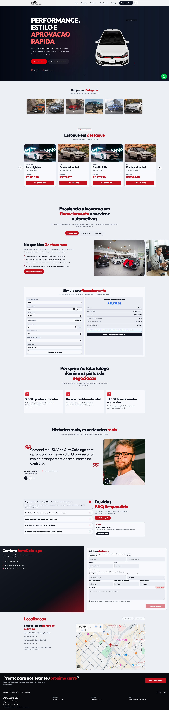
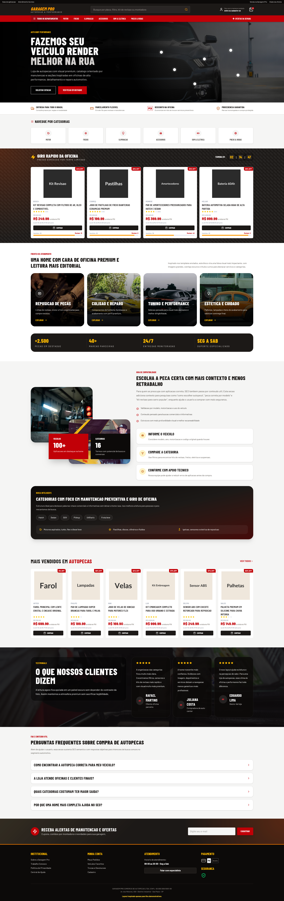
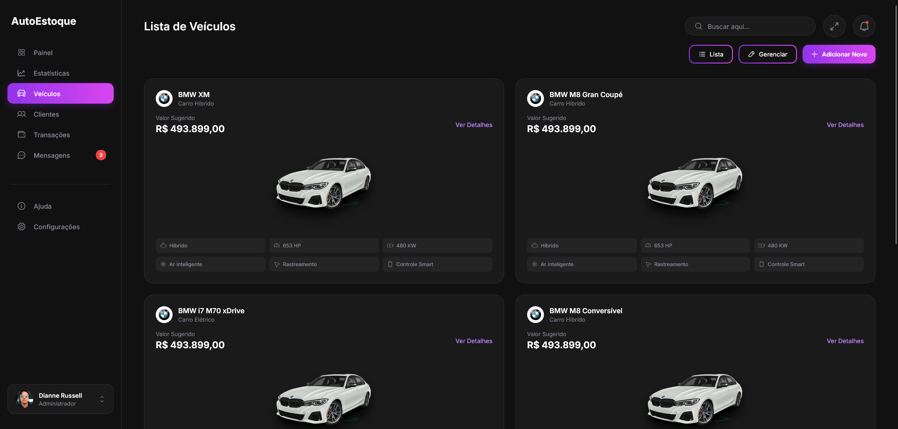

Projetos entregues para empresas dos segmentos
automotivo, logístico, industrial e de serviços. Cada
solução construída do zero, sob medida para o problema
do cliente.
0+Projetos
100%Satisfação
Nenhum projeto encontrado nesta categoria.
● Demonstração
Site Institucional
AutoMec — Site institucional para oficinas
mecânicas
Projeto Demonstração
Demonstração de site institucional desenvolvido
para oficinas mecânicas que querem
profissionalizar sua presença online. Apresenta
serviços, depoimentos de clientes, galeria de
fotos, formulário de contato e localização —
tudo pensado para converter visitantes em
clientes.
+Visibilidadeno Google
+Clientespelo site
+Credibilidadecom clientes

● Demonstração
ERP
AutoStock — Gestão de Veículos e Frota
Projeto Demonstração
Demonstração de sistema ERP para gestão completa
de frotas e veículos. Controle de entrada e
saída, histórico de manutenções, alertas
automáticos e relatórios gerenciais — tudo em
uma plataforma intuitiva para equipes de
qualquer tamanho.
−Retrabalhooperacional
+Controleda frota
+Agilidadeno dia a dia

Concluído
E-commerce
E-Shop — E-commerce de Itens Veiculares
Projeto Demonstração
Demonstração de loja virtual especializada em
peças e acessórios automotivos. Catálogo
organizado por categoria, busca por veículo,
carrinho otimizado e integração com meios de
pagamento — pronto para vender 24h por dia.
24hVendendo
+Alcancede clientes
−Esforçop/ vender

● Demonstração
Sistema Web
AutoCatalogo — Site institucional para
concessionárias
Projeto Demonstração
Demonstração de site institucional para
concessionárias que precisam exibir seu estoque
de forma profissional. Vitrine de veículos com
filtros, ficha técnica detalhada, simulação de
financiamento e integração com WhatsApp para
atendimento imediato.
+Leadsqualificados
+Vendaspelo digital
−Tempop/ fechar

● Demonstração
E-commerce
AutoPeças — E-commerce para lojas de autopeças
Projeto Demonstração
Demonstração de e-commerce focado em lojas de
autopeças que querem expandir as vendas para o
online. Busca inteligente por modelo e ano do
veículo, gestão de estoque integrada e
experiência de compra rápida e segura.
+Vendasonline
+Alcancenacional
−Ociosidadedo estoque

Concluído
ERP / Desktop
AutoEstoque — Controle de Estoque Industrial
Projeto Demonstração
Demonstração de sistema ERP desktop para
controle de estoque em ambientes industriais e
automotivos. Entrada e saída por código de
barras, rastreabilidade de lote, alertas de
reposição e relatórios de consumo por setor —
zero divergência de inventário.
−Divergênciasno estoque
+Rastreiopor lote
−Perdasde material
Seu projeto pode ser o próximo.
Conte-nos o que você precisa construir. Nossa equipe
analisa sua necessidade e retorna com uma proposta
em até 48h.
 ● Demonstração
● Demonstração